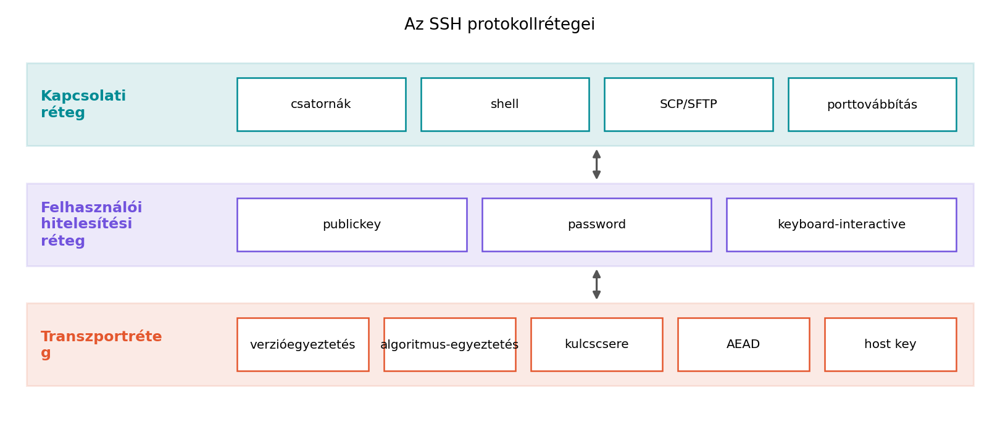
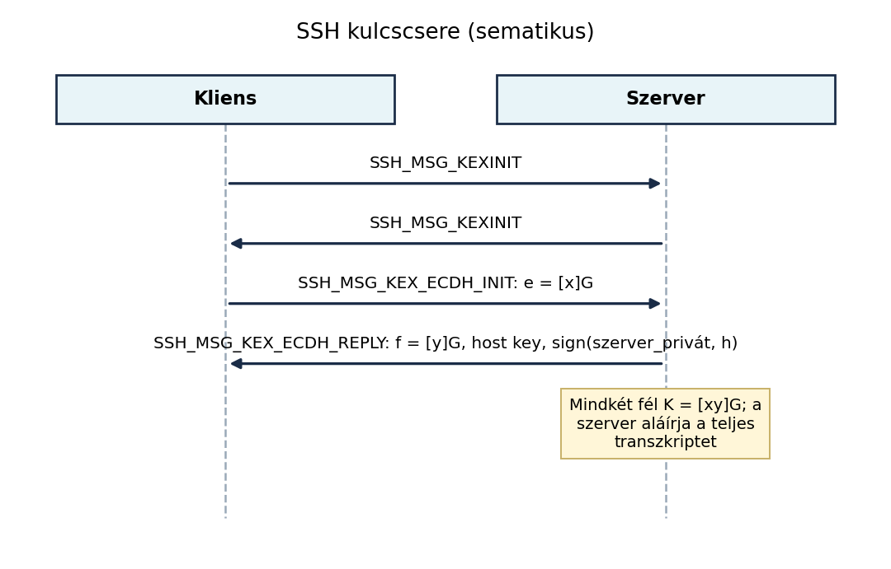
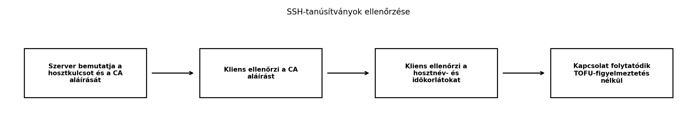

Képzeld el, hogy egy távoli Linux-kiszolgálót kell biztonságosan elérned egy kávézó nyílt Wi-Fi-hálózatán. A hálózat üzemeltetője vagy egy másik vendég láthatja a csomagjaidat, hamis válaszokat adhat vissza, sőt akár meg is előzhet (közbeékelődés, MITM). A cél egy olyan távoli shell, amelyben a bejelentkezés, a jelszó és a parancsok kimenete sem hallgatható le, és ahol a kiszolgáló kiléte igazolható. Ezt a gyakorlatban a Secure Shell (SSH) protokoll biztosítja. Az SSH az egyik leggyakrabban használt kriptográfiai protokoll: rendszergazdák, fejlesztők és automatizált rendszerek naponta milliárdnyi kapcsolatot hoznak létre vele. Mielőtt azonban bízunk benne, meg kell értenünk, hogyan épül fel a kulcscsere, mi a szerverkulcs-ujjlenyomat szerepe, és hogyan hitelesíthetjük magunkat kulccsal.
Az SSH-t szokás egy „kriptográfiai svájci bicskának” is nevezni, mert a titkosított csatornán túl fájlátvitelt, porttovábbítást és más szolgáltatásokat is kínál. Ebben az alfejezetben a protokoll két legfontosabb rétegére koncentrálunk: a transzportrétegre és a felhasználói hitelesítésre. Részletes csatornázással és porttovábbítással nem foglalkozunk, ahogyan ezt a Témaköri határok jelzik.
A protokollban kulcsszerepet játszanak a korábbi alfejezetekben megismert fogalmak:
Az SSH azért különösen érdekes, mert a Web PKI-val ellentétben elsősorban TOFU-modellt (Trust On First Use) használ a kiszolgáló kilétének rögzítésére. Ennek a modellnek a megértése és helyes alkalmazása a mindennapi biztonságos üzemeltetés egyik alapfeltétele.
Az SSH nem egyetlen „rejtjel”, hanem egy protokollverem. Mielőtt a részletekbe merülnénk, érdemes áttekinteni a rétegeket:

A rétegek közül a transzportréteg a biztonság alapja: ez hozza létre a titkos és integritásvédett csatornát. A felhasználói hitelesítési réteg ezen a csatornán belül igazolja a belépő személy vagy automatizált kliens kilétét. A kapcsolati réteg pedig ezen felül multiplexeli a csatornákat (például egy shell-munkamenetet és egy fájlátvitelt egyetlen TCP-kapcsolaton belül).
Az SSH két fő elődjétől, a Telnet-től és a rsh-tól elsősorban abban különbözik, hogy minden hitelesítő adatot és minden adatfolyamot titkosít. A transzportréteg feladata a közösen használt szimmetrikus kulcsok létrehozása authentikált Diffie–Hellman segítségével, valamint a kiszolgáló kilétének igazolása.
A TCP-kapcsolat létrejötte után mindkét fél egy-egy azonosító sort küld, például:
SSH-2.0-OpenSSH_9.6p1Ezzel egyeztetik, hogy az SSH protokoll 2-es verzióját beszélik. Az 1-es verzió elavult, ismert biztonsági hiányosságai miatt a modern kliensek alapértelmezés szerint elutasítják. Ha az egyeztetés nem sikerül, a kapcsolat lezárul.
A verziócsere után a felek listákat küldenek arról, hogy mely kriptográfiai algoritmusokat támogatják. A listák külön tartalmazzák a kulcscsere-algoritmusokat, a hosztkulcs-típusokat, a szimmetrikus rejtjeleket, a MAC- vagy AEAD-algoritmusokat és a tömörítést. Például:
kex_algorithms: curve25519-sha256@libssh.org, sntrup761x25519-sha512@openssh.com
host_key_algorithms: ssh-ed25519, rsa-sha2-512, ecdsa-sha2-nistp256
encryption_algorithms: chacha20-poly1305@openssh.com, aes128-gcm@openssh.com
mac_algorithms: hmac-sha2-256, hmac-sha2-512A lista sorrendje a preferenciát jelzi. A választott algoritmus a kliens listájának első olyan eleme, amelyet a szerver is támogat (RFC 4253 7.1). Ez a mechanizmus teszi lehetővé a fokozatos frissítést: ha egy algoritmus gyengévé válik, a szerver és a kliens rendszergazdája is azonnal eltávolíthatja a listából.
Az SSH 2-ben a klasszikus kulcscsere a Diffie–Hellman-protokoll vagy
az elliptikus görbe alapú változat (ECDH). A friss OpenSSH-verziók
(10.x) alapértelmezésben az ML-KEM-768 és az X25519 hibridjét
(mlkem768x25519-sha256) részesítik előnyben, utána az
sntrup761x25519-sha512 és a curve25519-sha256
következik (ellenőrzési igény: verziófüggő; az ssh -Q kex
és az ssh -G <hoszt> mutatja a helyi alapértelmezést,
az algoritmusnevek és paraméterek tekintetében az OpenSSH-dokumentáció
az irányadó).
A kulcscsere üzenetváltása a következő:

A lépések:
Az 1. lépésben szereplő véletlen értékeket azért kell frissnek tartani, hogy a kulcscsere ne legyen visszajátszható. A kulcscseréhez használt ephemeral értékeket soha nem tároljuk hosszú távon, csupán a munkamenet idejére szolgálnak. Ezzel a megoldással a hosszú távú hosztkulcs kompromittálódása esetén a rögzített korábbi forgalom visszafejtése nem válik lehetővé — ez a forward secrecy lényege.
Pontosabb definíció. Az SSH transzportréteg kulcscseréje a következő séma szerint fut:
Példa: kulcsszármaztatás kis paraméterekkel (fiktív, oktatási
célra). Tegyük fel, hogy a közös titok
(mpint-ként 00 00 00 01 2a; a gyakorlatban egy 256 bites
véletlen érték), az exchange hash és egyben a session_id
(itt csak szemléltetés). SHA-256-tal, hashlib-bel számolva
a
értékek első 8 bájtja: A → d1ef12d93b418cbf, B →
009fa77bf18d4b60, C → 679c8b9d3345a14b, D →
c3244dc4155426f6, E → 6e01f678e0955475, F →
5989da8e17f081ff. A hat érték páronként különbözik, így az
irányok és szerepek kulcsai függetlenek. (Az SSH nem HKDF-et használ; a
valóságban a kimenetet a szükséges hosszra kiterjesztik.)
Miután a transzportréteg titkosított csatornája kiépült, a felhasználói hitelesítési réteg következik. A kliens a szervernek elküldi a hitelesítési kéréseket, a szerver pedig elfogadja vagy elutasítja azokat. Az SSH több hitelesítési módot támogat, a leggyakoribbak:
A nyilvános kulcsú hitelesítés a legbiztonságosabb és a legelterjedtebb, ezért ezzel foglalkozunk részletesen. A privát kulcsot a kliens soha nem küldi el a szervernek. Ehelyett a kliens aláírja a munkamenet-azonosítót (session_id, a kulcscsere hash-e) és a kérés mezőit; a szerver nem küld külön kihívást. A szerver a korábban regisztrált nyilvános kulccsal ellenőrzi az aláírást.
Algoritmus: SSH nyilvános kulcsú hitelesítés
publickey módot,
az algoritmus nevét és a teljes nyilvános kulcsblobot (opcionálisan
előbb aláírás nélkül megkérdezi, elfogadható-e:
SSH_MSG_USERAUTH_PK_OK).~/.ssh/authorized_keys fájljában; ha nem, elutasítja a
kérést.session_id ‖ a
kérés mezői (felhasználónév, szolgáltatás, publickey,
algoritmus, kulcsblob) bájtsort. A session_id az első
kulcscsere
hash-e, ezért kapcsolatonként más, és mindkét fél véletlenjétől
függ.A modern OpenSSH alapértelmezett kulcstípusa az Ed25519, amelyet az EdDSA és Ed25519 alfejezetben mutatunk be. Az Ed25519 aláírások gyorsak, rövidek és determinisztikus nonce-ot használnak. Az RSA kulcsok továbbra is támogatottak, de a gyakorlati ajánlások szerint az új kulcsokhoz Ed25519-et érdemes választani.
A Web PKI-ban a hitelesítésszolgáltatók által aláírt tanúsítványok hierarchiája biztosítja a szerver kilétének ellenőrzését. Az SSH ezzel szemben alapvetően egy TOFU-modellt használ. Amikor először csatlakozunk egy kiszolgálóhoz, a kliens megmutatja a szerver hosztkulcsának ujjlenyomatát, és megkérdezi, megbízunk-e benne:
The authenticity of host 'example.com (192.0.2.10)' can't be established.
ED25519 key fingerprint is SHA256:AbCdEf... (base64)
Are you sure you want to continue connecting (yes/no)?Ha igent mondunk, a kliens a hosztkulcsot és a hozzá tartozó
nevet/IP-címet eltárolja a ~/.ssh/known_hosts fájlban. A
következő csatlakozáskor a kliens összehasonlítja a szerver által
bemutatott kulcsot a tárolttal. Ha az egyezik, a kapcsolat folytatódik.
Ha nem, figyelmeztetést kapunk:
WARNING: REMOTE HOST IDENTIFICATION HAS CHANGED!
IT IS POSSIBLE THAT SOMEONE IS DOING SOMETHING NASTY!Ekkor a kliens megtagadja a folytatást, hacsak a felhasználó kézzel nem távolítja el a régi bejegyzést. Ez a figyelmeztetés a közbeékelődés vagy a szerver újratelepítésének jele lehet. A felhasználó feladata eldönteni, hogy a változás várható volt-e (például a szerver hosztkulcsot cserélt), vagy támadásra utal.
A TOFU erőssége, hogy nem igényel központi infrastruktúrát, és a felhasználó teljes ellenőrzést kap. Gyengesége, hogy az első kapcsolódásnál nem tud különbséget tenni a legitim szerver és a támadó között. A kockázat csökkentésére a rendszergazdák előre publikálhatják a hosztkulcs ujjlenyomatát, például egy dokumentált konfigurációs oldalon vagy egy titkosított csatornán. Emellett az SSH támogatja a hosztkulcs-tanúsítványokat is, amelyekkel egy megbízható hitelesítésszolgáltató írja alá a hosztkulcsokat, így a TOFU helyébe léphet egy centralizált modell.
Az SSH-tanúsítványok célja a hosztkulcsok és a felhasználói kulcsok hitelesítése egy megbízható titkos kulccsal. Nem tévesztendők össze az X.509 tanúsítványokkal: az SSH-tanúsítvány egy egyszerűbb, SSH-specifikus szerkezet. A tanúsítványt egy tanúsítványhatóság (CA) privát kulccsal írják alá, és a tanúsítványban szerepelnek a korlátozások, érvényességi idők és a kulcs típusa.

A tanúsítvány előnyei: a felhasználóknak nem kell minden szerver ujjlenyomatát egyenként ellenőrizniük; a rendszergazda központilag adhat ki rövid élettartamú felhasználói kulcsokat; és a tanúsítványba be lehet írni, hogy a kulcs csak bizonyos parancsokhoz, hosztokhoz vagy ideig használható. Ez nagyban megkönnyíti a nagy szerverparkok kezelését és a rotációt.
A Terrapin (Bäumer–Brinkmann–Schwenk, 2023; CVE-2023-48795 –
ellenőrzési igény: a pontos azonosítók és érintett verziók a hivatalos
publikációból) az SSH csomag-sorszámok kezelését használja ki. A
sorszámok implicitek, és a kulcscserénél nem nullázódnak. A támadó a még
titkosítatlan kézfogásba egy plusz üzenetet (például
SSH_MSG_IGNORE) szúr be, így a fogadó sorszáma eggyel
előrébb jár, majd a titkosított csatorna első üzenetét (például az
EXT_INFO kiterjesztés-egyeztetést) törli. A sorszámok ismét
egyeznek, így a törlés észrevétlen marad. Az aláírt kulcscsere-hash ezt
nem fedi le, mert a sorszámok és a NEWKEYS utáni üzenetek nincsenek
benne. A támadás a chacha20-poly1305@openssh.com és a CBC +
Encrypt-then-MAC módokkal működik. Hatás: kiterjesztések
visszaminősítése (például aláírási algoritmus- vagy
billentyűzet-időzítés-védelem kikapcsolása). Javítás: a „strict kex”
(sorszám-nullázás a NEWKEYS-nél, idegen üzenet tiltása a kezdeti
kulcscserében), amelyhez mindkét félnek frissítenie kell.
Az alábbi ábra a mechanizmust a csomag-sorszámokon mutatja,
sematikusan: Mallory a titkosítatlan kulcscserébe egy
IGNORE üzenetet szúr be, ezért a kliens fogadó számlálója
eggyel előrébb jár a szerver küldő számlálójánál; a NEWKEYS utáni első
titkosított üzenetet (EXT_INFO,
)
eldobja, így a következő üzenet
()
pontosan azzal a sorszámmal érkezik, amelyet a kliens vár, és a törlés
észrevétlen marad. Az interaktív változatban a „strict kex”
ellenintézkedés is bekapcsolható: ekkor a NEWKEYS mindkét számlálót
nullázza, a kezdeti kulcscserében érkező idegen üzenet pedig bontja a
kapcsolatot.
A tanulság: a csatorna sorszámainak és a kézfogás utáni első üzeneteknek is hitelesítettnek kell lenniük, nem csak a kulcscsere üzeneteinek (transzkript-integritás). Az SSH implementációk a támadás után frissültek, hogy a kulcscsere során szigorúbb sorrendet és teljesebb transzkript-védelmet alkalmazzanak. Ez a hiba is mutatja, hogy a protokollok biztonsága nem csak a matematikai primitíveken múlik, hanem az üzenetek feldolgozásának pontos sorrendjén is.
A Python cryptography csomaggal egyszerűen
ellenőrizhetjük egy Ed25519 hosztkulcs ujjlenyomatát, és szimulálhatjuk
a TOFU-folyamatot. A példa egy saját, helyben generált kulcspárt
használ; nem valós szerver ellen fut.
# OKTATÁSI CÉLRA – NEM ÉLES HASZNÁLATRA
from cryptography.hazmat.primitives import serialization
from cryptography.hazmat.primitives.asymmetric import ed25519
import hashlib, base64
# Szerver hosztkulcs generálása (csak teszt)
host_key = ed25519.Ed25519PrivateKey.generate()
host_public = host_key.public_key()
line = host_public.public_bytes(
encoding=serialization.Encoding.OpenSSH,
format=serialization.PublicFormat.OpenSSH
).decode()
blob = base64.b64decode(line.split()[1])
# Ujjlenyomat: SHA-256 az SSH-formátumú kulcsblobról (ugyanaz, mint az ssh-keygen -l)
digest = hashlib.sha256(blob).digest()
fingerprint = base64.b64encode(digest).decode().rstrip("=")
print("Hosztkulcs-ujjlenyomat:", "SHA256:" + fingerprint)
# TOFU: eltároljuk az ujjlenyomatot, majd egy második kapcsolatnál összevetjük
known_hosts = {"example.com": fingerprint}
def verify_host(hostname: str, presented_fingerprint: str) -> bool:
if hostname not in known_hosts:
print(f"{hostname} ismeretlen; TOFU: ellenőrizd és mentsd el.")
return False
if known_hosts[hostname] != presented_fingerprint:
print("FIGYELMEZTETÉS: a hosztkulcs megváltozott!")
return False
return True
# Első kapcsolódáskor a felhasználó menti az ujjlenyomatot
known_hosts["example.com"] = fingerprint
# Második kapcsolódáskor a bemutatott ujjlenyomat egyezik
print("Ellenőrzés:", verify_host("example.com", fingerprint))Várt kimenet (a véletlen kulcs miatt az ujjlenyomat minden
futtatáskor más). Ellenőrizheted: a line-t
.pub fájlba írva az ssh-keygen -lf ugyanezt az
ujjlenyomatot adja (rögzített teszt-kulccsal,
from_private_bytes(bytes(32)), a blob-hash
SHA256:tAXFyTXI8xtDaujAEcwJslAYc9/6FKcUkd2Lw0xDhPo, python
hashlib-bel újraszámolva; az ssh-keygen összevetést a
lektor végezte, itt nem futtattuk):
Hosztkulcs-ujjlenyomat: SHA256:...
Ellenőrzés: TrueA kód jól mutatja a TOFU lényegét: a bizalom az első kapcsolatnál
keletkezik, és utána a tárolt ujjlenyomatot kell összehasonlítani. Az
éles SSH-kliensek ezt automatikusan elvégzik a known_hosts
fájllal.
A következőkben egy számozott ellenőrzőlista foglalja össze a legfontosabb lépéseket.
Recept: SSH-kulcs generálása és használata (OpenSSH, parancssor)
Generálás Ed25519 kulccsal
ssh-keygen -t ed25519 -a 32 -f ~/.ssh/id_ed25519A -a 32 32 KDF-iterációt állít be a jelszóval védett
privát kulcs kódolásához; az alapértelmezett korszerűbb formátum
(OpenSSH saját formátuma) jelszóval védi a kulcsot.
Privát kulcs jelszóvédelme
Soha ne használj jelszó nélküli privát kulcsot interaktív fiókhoz. A
jelszóval védett kulcs titkosítva tárolódik a lemezen. Automatizált
rendszereknél korlátozott jogosultságú, jelszóval védett kulcs
ajánlott.
Nyilvános kulcs feltelepítése a szerverre
ssh-copy-id -i ~/.ssh/id_ed25519.pub user@example.comEz hozzáadja a nyilvános kulcsot a
~/.ssh/authorized_keys fájlhoz.
ssh-agent használata
Az ssh-agent a privát kulcsokat a háttérben tartja, és a
klienskérésekre aláírást készít. A kulcsot egyszer kell feloldani
jelszóval:
eval $(ssh-agent)
ssh-add ~/.ssh/id_ed25519Ismert hosztok ellenőrzése
Az első kapcsolódásnál ellenőrizze a hosztkulcs-ujjlenyomatot, lehetőleg
egy második, független csatornán (például a szolgáltató
dokumentációjában).
Tiltó beállítások
Soha ne kapcsolja ki a hosztkulcs-ellenőrzést a
StrictHostKeyChecking no és a
UserKnownHostsFile=/dev/null opciókkal, kivéve teljesen
ellenőrzött, eldobható tesztkörnyezetben.
Ez a recept a gyakorlatban azonnal használható. A -a
értéke és az OpenSSH formátum pontos viselkedése verziófüggő lehet,
ezért nagyobb rendszerekben ellenőrizze a helyi dokumentációt.
Az SSH használata során számos fogalmi és implementációs hiba előfordulhat. A leggyakoribbak:
A TOFU-figyelmeztetés automatikus elfogadása. A
felhasználók gyakran yes-t írnak anélkül, hogy ellenőriznék
az ujjlenyomatot. Ez pontosan a közbeékelődéses támadásnak nyit kaput: a
támadó a saját kulcsát mutatja be, és ha a felhasználó elfogadja, a
támadó lehallgathatja a forgalmat. Helyes gyakorlat: az első
kapcsolatnál mindig ellenőrizze az ujjlenyomatot egy független
csatornán.
A StrictHostKeyChecking no
beállítása. Ez a beállítás teljesen kikapcsolja a
hosztkulcs-ellenőrzést, így a kapcsolat közbeékelődhető. Még
automatizálásnál is jobb, ha a hosztkulcsot előre elhelyezzük a
known_hosts fájlban, vagy hosztkulcs-tanúsítványt
használunk.
Jelszó nélküli privát kulcs tárolása. Ha a privát kulcs lemezen jelszó nélkül, olvasható formában fekszik, egy másik, a gépet feltörő támadó azonnal átveheti az SSH-hozzáféréseket. Helyes gyakorlat: mindig jelszóval védett kulcs, és lehetőleg hardveres kulcs (például FIDO2) vagy ssh-agent.
RSA kulcsok túl rövidek vagy elavultak. A régi,
1024 bites vagy annál rövidebb RSA kulcsok ma már nem tekinthetők
biztonságosnak. Az OpenSSH az 1024 bitnél rövidebb RSA-kulcsokat
elutasítja (RequiredRSASize), és az 1024 bitest sem tekinti
biztonságosnak. Helyes gyakorlat: Ed25519 vagy legalább 2048 bites RSA,
ahol a 2048 bites RSA inkább kompatibilitási tartalék.
Az ssh-agent túlzott megbízása. Ha az
ssh-agentet forwardinggal (-A) használjuk, a távoli szerver
hozzáférhet az agent által kínált aláírási képességekhez. Egy
kompromittált szerver ilyenkor a felhasználó nevében hitelesítheti magát
más szerverek felé. Helyes gyakorlat: kerülje a forwardingot, vagy
használjon korlátozott, egyedi kulcsot.
A transzkript-integritás figyelmen kívül hagyása. A Terrapin-támadás rámutatott, hogy az SSH implementációk közötti apró eltérések is veszélyeztethetik a csatornát. A rendszergazdáknak gondoskodniuk kell arról, hogy a kliens és a szerver egyaránt frissítve legyen, és a sebezhető algoritmusokat letiltsák.
StrictHostKeyChecking no beállítás, és
miért rossz ötlet?1. feladat (A). Írja le az SSH transzportréteg négy fő lépését a TCP-kapcsolat létrejötte után! Melyik lépés biztosítja a szerver hitelességét, és hogyan?
2. feladat (A). Tegyük fel, hogy egy szerver
hosztkulcs-ujjlenyomata SHA256:AbCdEf.... Mit kell tennie a
felhasználónak az első csatlakozáskor? Mi történik a második
csatlakozásnál, ha a bemutatott kulcs azonos, és mi, ha különbözik?
3. feladat (B). Magyarázza el, miért nyújt forward secrecy-t az SSH kulcscseréje. Pontosítsa, mely kulcsok rövid életűek és melyek hosszú életűek!
4. feladat (B). Tegyük fel, hogy egy támadó rögzíti az összes hálózati forgalmat egy SSH-kapcsolat alatt. Később megszerzi a szerver hosztkulcsának privát részét. Vissza tudja-e fejteni a rögzített munkamenetet? Indokolja válaszát!
5. feladat (C). Az SSH nyilvános kulcsú hitelesítésénél a kliens a privát kulcsával aláírja a munkamenet-azonosítót és a kérés mezőit. Miért köti az aláírás a session_id-hez a hitelesítést, és miért lesz a session_id kapcsolatonként egyedi? Milyen támadást előz meg ezzel a protokoll?
6. feladat (D). Tegyük fel, hogy egy rendszergazda a
következő bejegyzést találja a known_hosts fájlban:
example.com ssh-ed25519 AAAAC3NzaC1lZDI1NTE5AAAAI...A szerver újratelepítése után az SSH-kliens figyelmeztetést ad: a hosztkulcs megváltozott. Milyen lehetséges okok lehetnek? Hogyan dönthető el biztonságosan, hogy elfogadható-e az új kulcs?
Önellenőrzés – válaszok
StrictHostKeyChecking no kikapcsolja a
hosztkulcs-ellenőrzést, így a kliens bármilyen bemutatott kulcsot
elfogad. Ez lehetővé teszi a közbeékelődéses támadást.1. feladat megoldása. A négy lépés: (1) verzióegyeztetés, (2) algoritmus-egyeztetés, (3) kulcscsere, (4) kulcsszármaztatás. A szerver hitelességét a kulcscsere során a hosztkulccsal készített aláírás biztosítja. A kliens ellenőrzi az aláírást a már ismert, megbízható hosztkulccsal.
2. feladat megoldása. Az első csatlakozásnál a
felhasználónak ellenőriznie kell az ujjlenyomatot egy független
csatornán, és ha megbízik benne, mentenie kell a kulcsot a
known_hosts fájlba. A második csatlakozásnál, ha a
bemutatott kulcs azonos, a kapcsolat folytatódik; ha különbözik, a
kliens figyelmeztetést ad, és megtagadja a folytatást.
3. feladat megoldása. A kulcscsere során a felek efemer Diffie–Hellman kulcsokat használnak, amelyeket a munkamenet után eldobnak. A rögzített forgalom visszafejtéséhez a támadónak a közös titokra, azaz a konkrét munkamenet efemer kulcsára lenne szüksége, amelyet a hosszú távú hosztkulcs kompromittálása nem fed fel. A hosszú távú hosztkulcs csak aláír, nem vesz részt a titkosítási kulcsok létrehozásában, ezért a korábbi munkamenetek védettek maradnak.
4. feladat megoldása. Nem, mert a kulcscsere efemer Diffie–Hellman kulcsokat használ. A szerver hosztkulcsának privát része csak a kulcscsere aláírását tette lehetővé, nem a munkamenetkulcs kiszámítását. A visszafejtéshez a konkrét munkamenet idején használt efemer titkos kulcs kellene, amelyet a szerver nem tárol, és a hosszú távú kulcsból nem számítható ki. Így a rögzített forgalom bizalmas marad.
5. feladat megoldása. A session_id az első kulcscsere hash-e, amelyet mindkét fél már ismer; a frissességet az adja, hogy mindkét fél véletlen cookie-jától és efemer kulcsától függ, tehát kapcsolatonként más. Ez megakadályozza a visszajátszásos támadást: egy korábban rögzített érvényes aláírás a régi munkamenet-azonosítóra vonatkozik, így egy másik kapcsolatban nem fogadható el (és a szervernek nem kell külön kihívást küldenie).
6. feladat megoldása. A figyelmeztetés lehetséges okai: (a) a szervert újratelepítették, és új hosztkulcsot generáltak; (b) a hosztkulcsot szándékosan rotálták; (c) a támadó közbeékelődik. A biztonságos eldöntéshez a rendszergazdának egy független csatornán ellenőriznie kell az új ujjlenyomatot, például a szerver dokumentációjában vagy a hivatalos jegyzékben. Ha az új ujjlenyomat megegyezik az elvárttal, az új kulcs elfogadható; ha nem, a kapcsolatot el kell utasítani.
Az SSH a gyakorlatban leggyakrabban használt biztonságos csatorna-protokoll. A transzportréteg verzió- és algoritmus-egyeztetéssel kezd, majd hitelesített kulcscserét futtat: a felek efemer Diffie–Hellman vagy X25519 kulcsot cserélnek, a szerver a hosztkulcsával aláírja a teljes transzkript hash-ét, és a közös titokból irányonkénti szimmetrikus kulcsokat származtatnak. A szerver kilétét a TOFU-modell rögzíti: az első kapcsolatnál a kliens megjegyzi a hosztkulcs-ujjlenyomatot, és a későbbi kapcsolatoknál azt várja el. A felhasználói hitelesítés nyilvános kulccsal történhet, ahol az Ed25519 a javasolt típus; az ssh-agent a privát kulcsokat védi, de a forwardingot kerülni kell, mert növeli a kockázatot. Az SSH-tanúsítványok lehetővé teszik a hoszt- és felhasználói kulcsok központi aláírását, kiváltva a manuális TOFU-ellenőrzést. A 2023-as Terrapin-támadás rámutatott, hogy a transzkript-integritást szigorúan kell kezelni, és minden implementációt frissíteni kell. Az SSH biztonságos használata fegyelmet igényel: ujjlenyomat-ellenőrzés, jelszóval védett kulcs, betartott hosztkulcs-ellenőrzés és rendszeres frissítés. A TOFU-modellt a A Signal-protokoll: X3DH és a double ratchet alfejezetben is viszontlátjuk, a transzkript-integritás elvét pedig a Protokollszintű hibák: visszaminősítés, bemenetellenőrzés, kontextuskötés alfejezetben bontjuk ki.
sntrup761x25519-sha512 név a kiadott
OpenSSH-dokumentációban ellenőrizhető; a részletes paraméterek
verziófüggők.